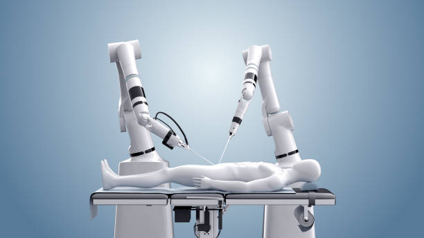
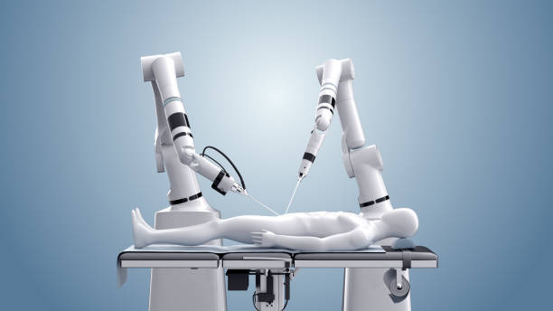
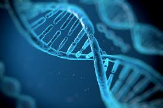
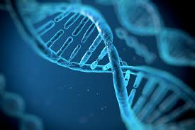
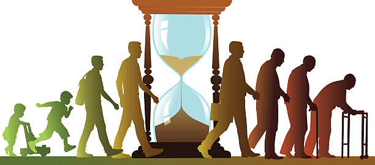
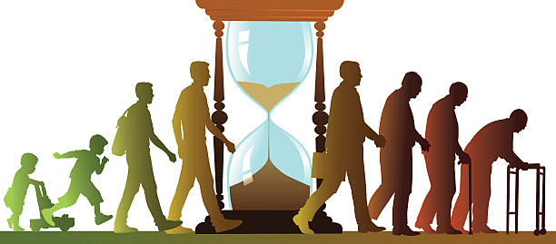
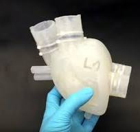
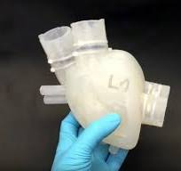

The medicine in the FUTURE
Automasitation
The nurses can be robots, this sports a lot of good things like
more leisure for the doctors and nurses because doctors are
working many hours.


Genetics
With this change in the genetics of the people we can have parts
of other animals like wings or more arms etc.... This can be very
interesting.


Life expenctancy
The life expectancy will increase because medicine, vaccinations
and medications are going to become more effective and because of
that the life expectancy is going to increase.


Organ transplation
In the future, it will be easier to make organs with artificial
material that can help a lot of patients to survive in case an
accident could happen to them.


Change in medicine
Medicine will be more expensive, but also more effective and
faster